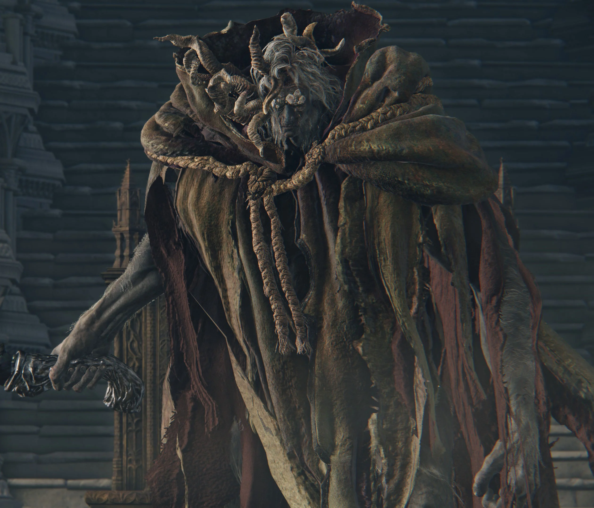

Morgott the Omen King
health: 10,399 HP Health: 10,399 HP Defense: 114 Stance: 80 Parryable: Yes, but 3 parries are required per stance break Is vulnerable to a critical hit after being stance broken or parried Drops 120,000 Runes